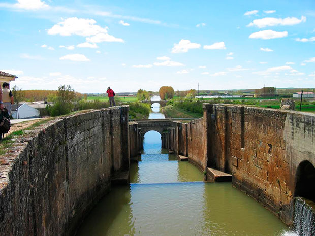
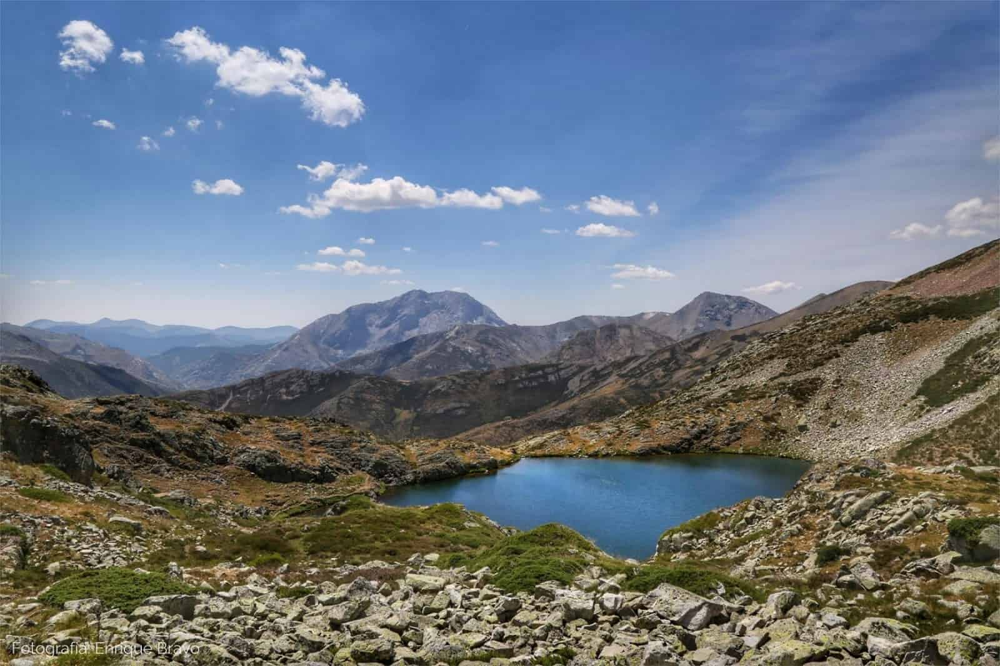

PALENCIA
LOCALIZACIÓN

Fuente: Wikipedia: Palencia
LOCALIDADES PRINCIPALES
- Palencia
- Aguilar de Campoo
- Villamuriel de Cerrato
- Venta de Baños
- Guardo
- Saldaña
- Dueñas
- Cervera de Pisuerga
- Grijota
- Carrión de los Condes

Fuente: Hoteles
GEOGRAFÍA
La provincia de Palencia se caracteriza por tener dispares paisajes a los largo de su territorio. Como bien se canta en su himno, hay «vega y valle, llanura y montaña». Palencia es una de las 9 provincias que conforman la comunidad Autónoma de Castilla y León, España, y está situada al norte de la submeseta septentrional, entre Cantabria al norte, la provincia de Burgos al este, la de Valladolid al sur y León al oeste. Tiene una extensión territorial de 8029 km².
HISTORIA
Existen vestigios desde la época prehistórica pasando por una época romana de gran esplendor, reflejada en las villas romanas de La Olmeda cerca de Saldaña, o La Tejada en Quintanilla de la Cueza. Durante la Edad Media, los visigodos llevaron a Palencia a otra época de bienestar (quedan vestigios en la cripta de San Antolín de la catedral y en la ermita de San Juan de Baños). Posteriormente la provincia fue fruto de conflictos permanentes por su condición de frontera entre el reino de León y el de Castilla. Uno de los hitos más remarcables de la historia de Palencia se dio durante el siglo XIII, con la fundación de la primera universidad de España y una de las primeras del mundo. A partir de la Edad Moderna, la pujanza de otros centros como Valladolid, desplazó a Palencia al papel de centro secundario.
CULTURA
Tienen una ingeniería hidráulica más importantes de las realizadas entre mediados del siglo XVIII y el primer tercio del XIX en España. Recorre parte de las provincias de Burgos, Palencia y Valladolid en la comunidad autónoma de Castilla y León (España) y fue construido para facilitar el transporte del trigo de Castilla hacia los puertos del norte y de allí a otros mercados. Sin embargo, ante la llegada del ferrocarril, quedó obsoleto.
Fuente: Soy rural
NATURALEZA
Los mismos plegamientos alpinos produjeron al sur de esa zona montañosa una falla longitudinal en la que el piedemonte serrano deja paso a la planicie meseteña. En esta, sobre la depresión que se formó entonces, se acumularon espesos depósitos finos en régimen lacustre. En la parte superior son de calizas; bajo éstas se hallan las arcillas. Los ríos que proceden de aquella zona serrana septentrional (Carrión, Valdavia, Burejo, Boedo y Pisuerga), al encajarse en la costra caliza, dejan altas mesas o páramos entre ellos. Más abajo, hacia el sur, han barrido casi por completo el caparazón calcáreo y labran sus valles, más amplios, sobre el tramo inferior de las arcillas, dando lugar así en toda la parte meridional de la provincia a otro nivel inferior, la campiña (Tierra de Campos y Valles de Cerrato). Está dominada por algunos resaltes calcáreos, los cerros testigos, al igual que en el páramo surgen a trechos algunos crestones de cuarcitas, avanzadas hacia el sur de la zona serrana septentrional.
Todos estos ríos, que uno de ellos, el Pisuerga, recoge, se benefician de las nieves de aquellas cumbres y aportan su caudal, a través de ese general colector, hacia el Duero, ya fuera de la provincia. El Pisuerga forma valle subsecuente desde Cervera de Pisuerga hasta Aguilar de Campoo. Aguas abajo, en Alar del Rey, deriva de él el canal de Castilla que, más adelante, se bifurca en dos tramos, uno que prosigue hasta Valladolid, y otro, el canal de Campos, que lo hace en una localidad de esta otra provincia. Se utilizan ahora para regadío, pero el canal de Castilla se construyó para que sirviera como vía de comunicación y salida hacia el pie de la cordillera Cantábrica de los trigos de Tierra de Campos. El Ebro toca el ángulo nordeste de la provincia palentina.
Fuente: Somos Palencia
TRADICIONES
Se suelen realizar diversas fiestas en varias localidades. Entre ellas tenemos:
- Fiestas de San Juan Bautista, en la localidad de Baños de Cerrato
- Descenso Internacional del Pisuerga, en la localidad de Alar del Rey
- Regata Internacional del Carrión, en la localidad de Velilla del Río Carrión
- Festival Nacional de exaltación del Cangrejo de Río, en la localidad de Herrera de Pisuerga
- Fiestas de Nuestra Señora del Carmen (Barruelo de Santullán)